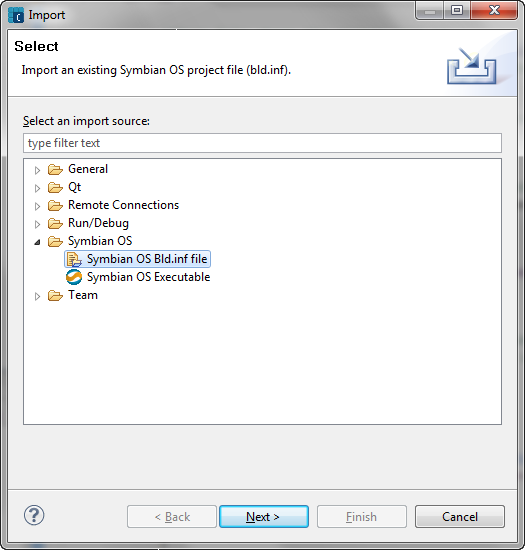
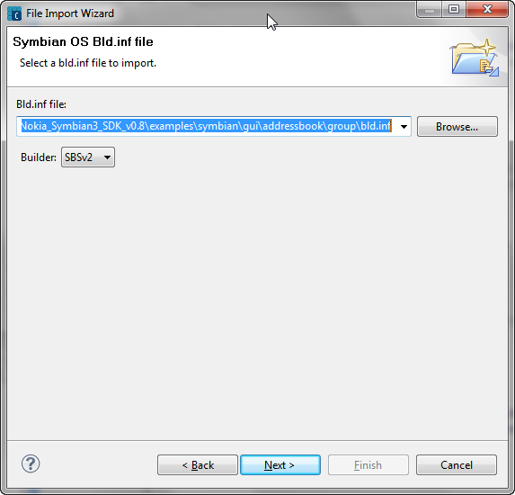
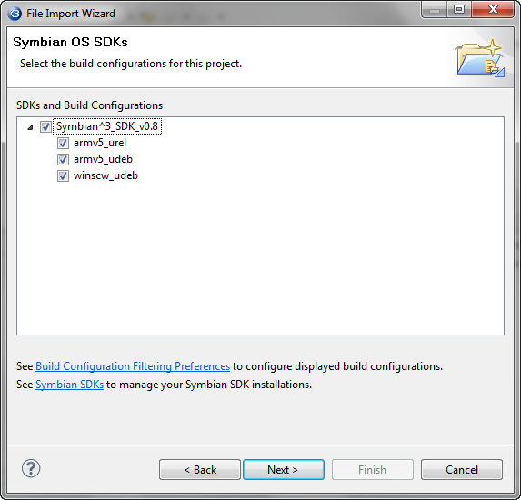
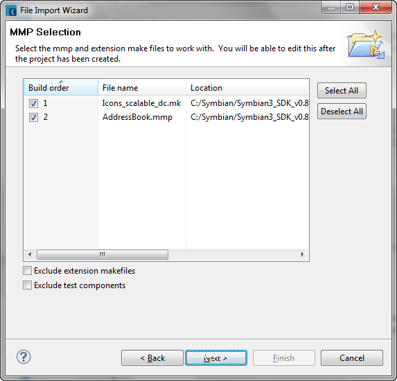
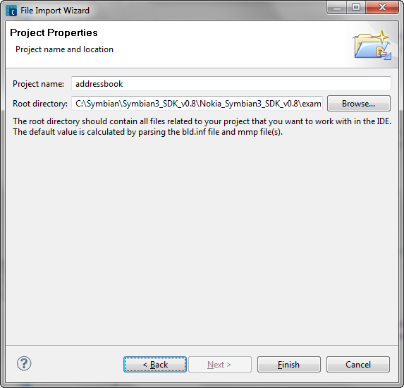

The command-line Symbian toolchain requires that projects are defined with these formats:
The primary purpose of bld.inf files is to group together closely associated projects, such as a GUI application and a engine DLL used by that application.
The Symbian plug-ins allow you to import projects defined with these formats into the workbench. This is useful if:
You have existing projects defined using these formats and now wish to move to development in Carbide.c++.
You need to keep the ability to build from the command line, for example in order to do automated builds, and so maintain the command line project files, but want to use Carbide.c++ for editing code and debugging.
Versions of Symbian 9.3+ devkits include extensive use of PRJ_EXTENSIONS and PRJ_TESTEXTENSIONS. These top-level entries are extension makefile templates whose names are later filled in with target names, sources, and options. The intent is to make source editing easier and dependency checking possible during a build.
Currently if you import a bld.inf file but are not importing all of the components and one of these extensions are found:
The reason being that individual extensions cannot be built from within Carbide, only the complete bld.inf.


NOTE Depending upon which SDKs are installed, you may see both SBSv1 and SBSv2 builders available. It is recommended that SBSv2 be the primary choice as SBSv1 has been deprecated for future Symbian development.
SBSv2 works with recent versions of Symbian^3 and Symbian ^4 SDKs. Both SBSv1 and SBSv2 are GNU make based build systems. SBSv1 uses Perl to generate make files, while SBSv2 uses Python. Select the appropriate builder for your project.
NOTE Choose SBSv2 whenever possible as SBSv1 is being phased out.
When building for SBSv2, the builder will set EPOCROOT to the absolute path (including drive letter) to the kit for the active build configuration. It will also add the path to the sbs bin directory to the start of the PATH variable. This is derived from the SBS_HOME environment variable.For SBSv2, all build configurations (platform/target), including the built-in platforms (WINSCW, ARMV5), are declared in xml files in the \sbs\lib\config directory. The Build Configurations selection page displays only kits known to support SBSv2.
The SDKs and Build Configurations shows a tree of the SDKs that are available to be used, and for each SDK, the type of build configurations that are available. You can select a single SDK if you are developing the program for just one version of a platform, or multiple SDKs if your program is to be built against multiple platforms or operating system versions.
NOTE The platforms listed are dependent upon the filter settings in the Platform Filtering Preferences.

One MMP file must be selected in order to continue. If the bld.inf file contains more than three MMP files, just select the MMP files you need to import. If there are three or less MMP files, then all are selected for importing.

When creating a project, project files are created in the root directory. Carbide.c++ creates additional files for each project. They consist of:
The root directory is a path to the root of your project. All necessary tool components, developer libraries, and information about the SDK are stored in subdirectories under this root. The whole path leading to the SDK root directory must be declared to the Windows system via the Environment Variables settings. The variable name is EPOCROOT and the variable value is the full path where a Symbian SDK is installed in the Windows system.
The root directory should contain all project related files that you want to work with in Carbide. The default directory is calculated by parsing the bld.inf file and mmp file(s).

The wizard creates the project in the Project Explorer view, where it can be built and edited as normal. If the wizard is unable to read the project files, then the page describes the error that occurred. If an error occurs, you must fix the project file, and then re-import the bld.inf.